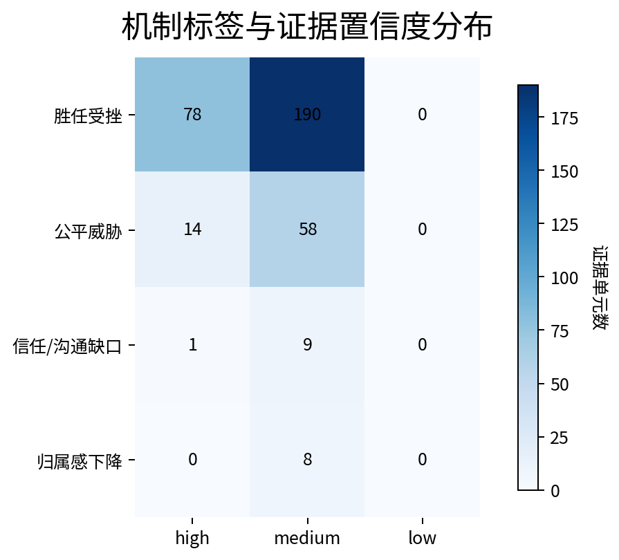

Problem
问题从哪里冒出来
海克斯大乱斗的评论区像夜市：热闹、拥挤、信息量巨大。有人在骂海克斯，有人在数英雄强度， 有人把锅扣给队友，也有人把一整晚的输赢都压缩成一句“这模式到底怎么玩”。
真正值得追的，不是情绪本身，而是情绪背后反复浮上来的那条线。玩家在说英雄，在说海克斯，在说匹配， 这些表层话题汇到一起，究竟指向什么？页面想回答的，就是这个问题。
这也是 PsyLens 的起点：把公开讨论从“看上去很吵”整理成“哪些主题在反复出现，哪些机制在不断被触发”， 然后再把结论压缩成可以给别人读、给别人查、也经得住追问的项目材料。
Lens
研究背景与理论依据
游戏里的不适感，往往不从术语开始。它先从一句“我看不懂”开始，从一局“努力了也没什么回音”开始， 再从几次连败之后变成一种更沉的感觉：这局到底还在不在我手里。
心理学里，胜任感一直是理解游戏体验的一根主梁。玩家知道自己在做什么，知道为什么会赢，也知道下一局还能怎样更好， 这根梁就稳。理解成本抬高、反馈变钝、努力和结果开始脱节，梁先松，情绪随后跟着晃。
页面把“胜任受挫”放在解释链中心，正是因为三平台文本最密集的表达都往这里靠： 模式不够可读，英雄和海克斯的适配关系模糊，投入了操作和注意力，局内仍然像踩在松沙上。 公平威胁没有消失，只是更多停留在匹配、奖励和部分规则节点。队友冲突和沟通摩擦继续往外扩， 让原本已经存在的挫败更容易在社区里变大声。
Workflow
执行流程

候选采集 → 正文抓取 → 预清洗 → AI 精修 → 三平台合并 → 验证洞察与行动建议
候选采集
围绕玩法/机制、队友互动、英雄体验、规则归因四个主题桶，在三平台建立候选池。
正文抓取
NGA 保留论坛讨论密度，贴吧补充互动与历史窗口，B站补充视频语境下的评论样本。
预清洗
空白、纯表情、极短噪声和明显无关文本先清掉，留住能继续分析的正文。
AI 精修
文本先落入主题，再给出机制先验，保留和研究问题真正相关的部分。
三平台合并
统一字段、对齐时间窗、控制平台样本量，让三种语境能放到同一张桌子上比较。
结果验证
证据单元继续收束为验证洞察与建议矩阵，自动输出之后再做人手复核与口径压缩。
Evidence
证据怎样一路收束

页面里所有结论，都不是从一轮“自动总结”直接跳出来的。公开文本先进入整洁样本， 再拆成证据单元，之后收束为验证洞察，最后压成建议矩阵。每往下走一层，信息密度更高，口径也更紧。
这条路径很重要。评论区里的句子常常锋利、热闹、带着火气；项目真正要留下来的，是那些跨平台、跨时间窗仍然反复出现的部分。 证据漏斗把这个收束过程直接摆出来，页面的结论也因此更像研究，而不是一次情绪整理。
Coverage
数据覆盖与稳健性
当前版本共纳入三平台整洁版样本 360 条，NGA、贴吧、B站各 120 条。这样的平衡控制， 让不同平台的表达习惯在同一页里彼此校正。NGA 的文本更集中、更锋利；贴吧更容易带出互动氛围和历史窗口； B站则把视频语境下的英雄体验和评论节奏带进来。
时间窗同时保留近期窗口和历史窗口。结论因此不会悬在某一轮热议的高点上，而会接受一个更慢一些、更宽一些的检视。
三平台样本与时间窗分布

三个平台各保留 120 条整洁样本；w1 与 w2 同时存在，给页面的主结论留出最基础的时间对照。
Findings
关键发现
玩法/机制争议构成主轴
三平台最密集的讨论，都先围着玩法理解与模式逻辑打转。英雄和海克斯是入口， 真正被反复触到的，还是“为什么这局越来越不可读”。
胜任受挫形成最稳定的落点
“看不懂”“没手感”“努力没有回音”不断出现。玩家卡住的地方，落在掌控感、理解感和有效反馈上， 这使得胜任受挫成为页面里最稳的一条机制线。
公平威胁停在次级位置
匹配与奖励相关场景里，公平威胁依然清晰。整张图展开之后，它更多停在局部节点， 没有接过整页讨论的主导权。
社区冲突放大原有不适
贴吧和 B站补充出的互动语境表明，队友归因、沟通风格和情绪传染会继续推高已经存在的不适， 让玩法理解上的挫败扩散到信任和沟通层面。
Charts
结果图表
这些图负责讲结构，不只负责报数量。
主题桶分布

玩法/机制讨论占据最高比重，队友互动与英雄体验构成第二层结构。规则归因数量不高， 说明玩家更常抓住实际对局里的困顿，而不是停在抽象标签上。
机制标签分布

胜任受挫显著高于公平威胁。主问题集中在掌控感、理解感和有效反馈的断裂上， 这也让页面的心理学主线站得更稳。
三平台主题结构对比

NGA 更集中地放大玩法/机制争议，贴吧补充互动摩擦，B站把英雄体验和视频语境下的表达带进来。 三个平台的说法不同，热区却能互相拼出一张完整图。
三平台机制证据结构对比

这张图采用三平台保留样本层的 mechanism prior 分布。胜任受挫在三个平台内部都占更高比重， 贴吧也不再空缺，平台差异因此更容易读清。
时间窗 × 机制分布

近期窗口带来更强的表达密度，历史窗口保留了更慢一点的回声。比例会晃，主机制没有翻面， 这让“胜任受挫”这条主线多了一层时间维度上的支撑。
主题 × 机制热力图

玩法/机制与胜任受挫之间的对应最强；公平威胁在规则归因和局部节点里更容易冒头。 这张图把表层话题和机制解释直接拴在了一起。
机制 × 证据置信度

这里看的不是标签多少，而是哪些标签在更高置信度上更集中。证据越收敛，页面里的结论越稳。
Package
项目包与核查入口
项目说明
完整阅读项目背景、研究问题、执行流程、关键发现与建议结构。
下载项目说明文件关键结果
查看三平台整洁版输入、证据表、验证洞察与行动建议矩阵。
流程脚本
查看抓取、清洗、合并与主流程实现路径。
Boundary
价值与边界
页面留下了什么
这页展示的，不止是一组结果，更是一条从公开文本走向结构化解释的路径。 它可以继续迁移到其他游戏模式、社区议题、用户反馈和体验研究场景。
页面没有承诺什么
公开评论天然带着平台风格和表达偏差。这里保留下来的，是跨平台、跨时间窗都能反复看见的部分； 它足够支撑一页案例，却不会冒充对整个平台的终局判断。